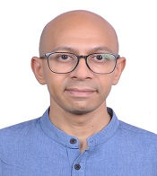

Ashwin K. Seshadri
Divecha Centre for Climate Change
Indian Institute of Science, Bengaluru
Our group works at the intersection of nonlinear climate dynamics and the science and policy of decarbonization — asking which aspects of climate and Earth-system behaviour can be projected or understood robustly, which uncertainties remain irreducible, and how to design reliable pathways to a low-carbon energy system.

IISc, Bengaluru 560012
ashwins@iisc.ac.in
Ph.D., Engineering and Public Policy
Carnegie Mellon University
M.S., Mechanical Engineering
Purdue University
B.S., Mechanical Engineering
Purdue University
Climate Dynamics & Nonlinear Earth System Dynamics
Nonlinear dynamics of monsoons; monsoon regime stability and onset/withdrawal. What makes monsoon systems robust — or fragile — across climatic states? Earth-system feedbacks, their latitudinal dependence, and differences across forcing agents. Theory and methods for ensemble design in Earth-system modeling.
Science & Policy of Decarbonization
Mechanisms behind cumulative emissions–global warming relationships and carbon budgets; zero-emissions commitment. Grid integration of variable renewables. Renewable energy droughts, wind-solar complementarity, energy storage modelling and tradeoffs, and policy mechanisms for decarbonization, reliability, and grid stability.
Monsoon Variability & Prediction
Active–break cycle dynamics; subseasonal variability and sources of predictability; monsoon low-pressure system dynamics; effects of global warming and solar geoengineering on low pressure systems; Somali Jet and cross-equatorial flow energetics; intraseasonal convection–circulation coupling.
Systemic Risk in Low-Carbon Energy Transitions
Stability and resilience of low-carbon transitions, and navigating compound risks in energy transitions amidst accelerating global systemic risks. Feedbacks between climate change and net-zero pathways — including climate tipping points, warming impacts on renewable energy systems, and changing resource economics.
-
Oct 2026
Singh, Bala & Seshadri · Earth's Future
-
Apr 2026
Gambhir et al. · One Earth
-
Apr 2026
Singh, Bala & Seshadri · Journal of Climate
-
Mar 2026
Jha, Nanjundiah & Seshadri · QJRMS
-
Jan 2026
Gangopadhyay & Seshadri · Journal of Energy Storage
-
Sep 2025
Murthy, Kumar & Seshadri · Ecological Complexity